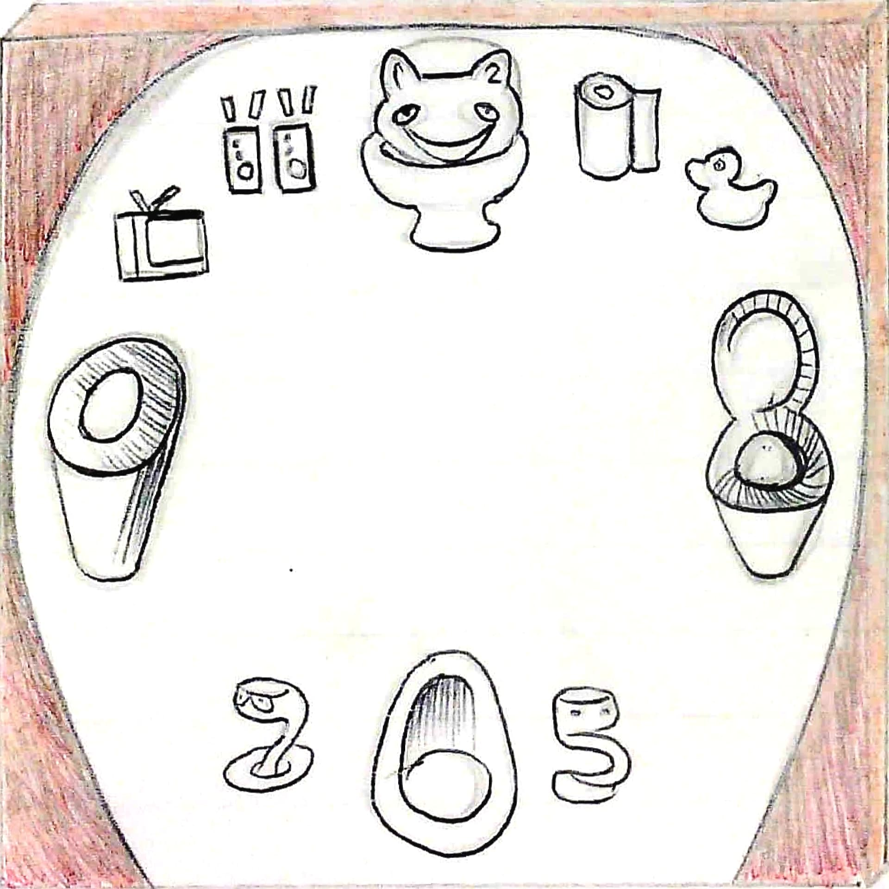
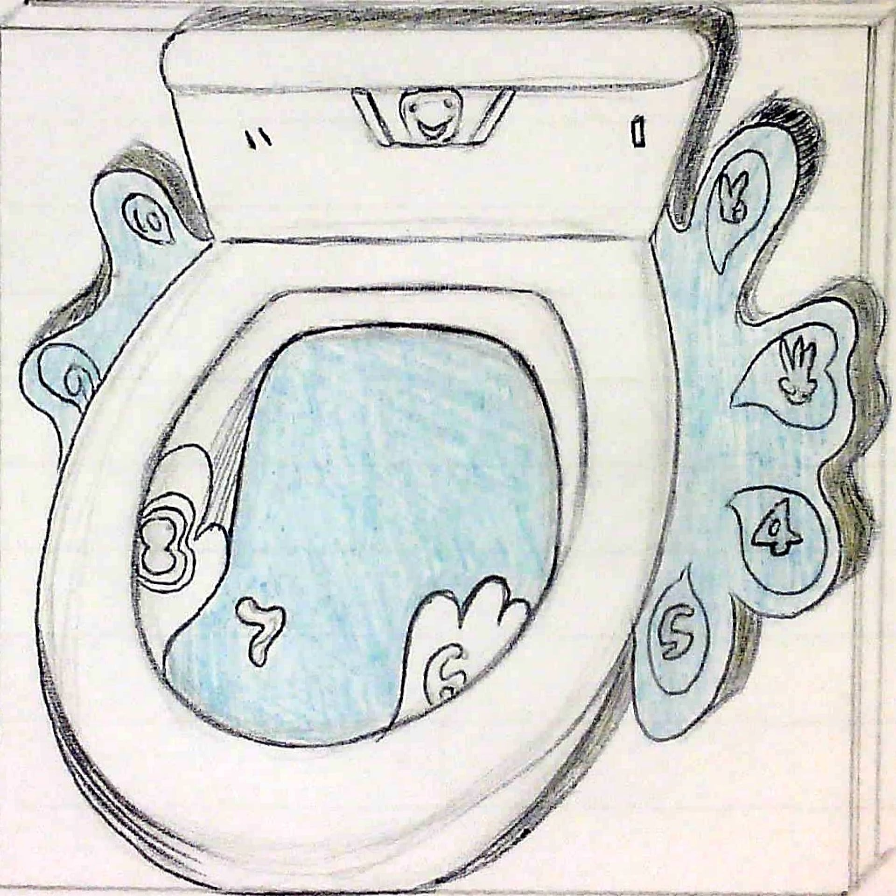
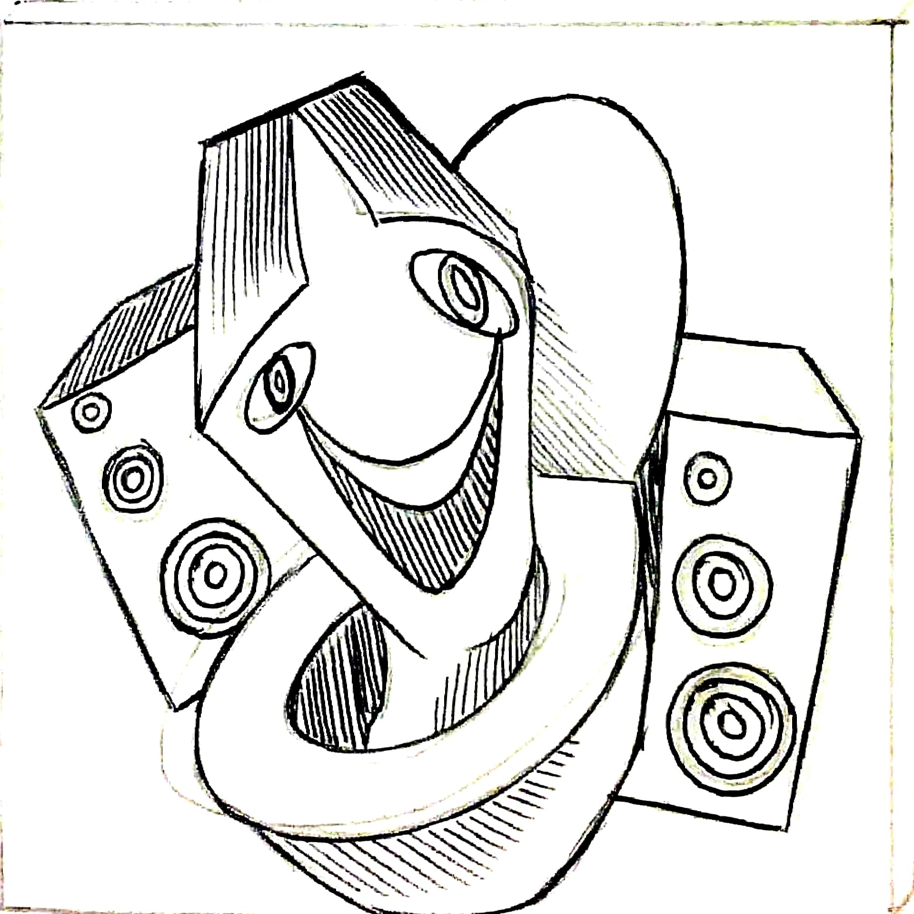
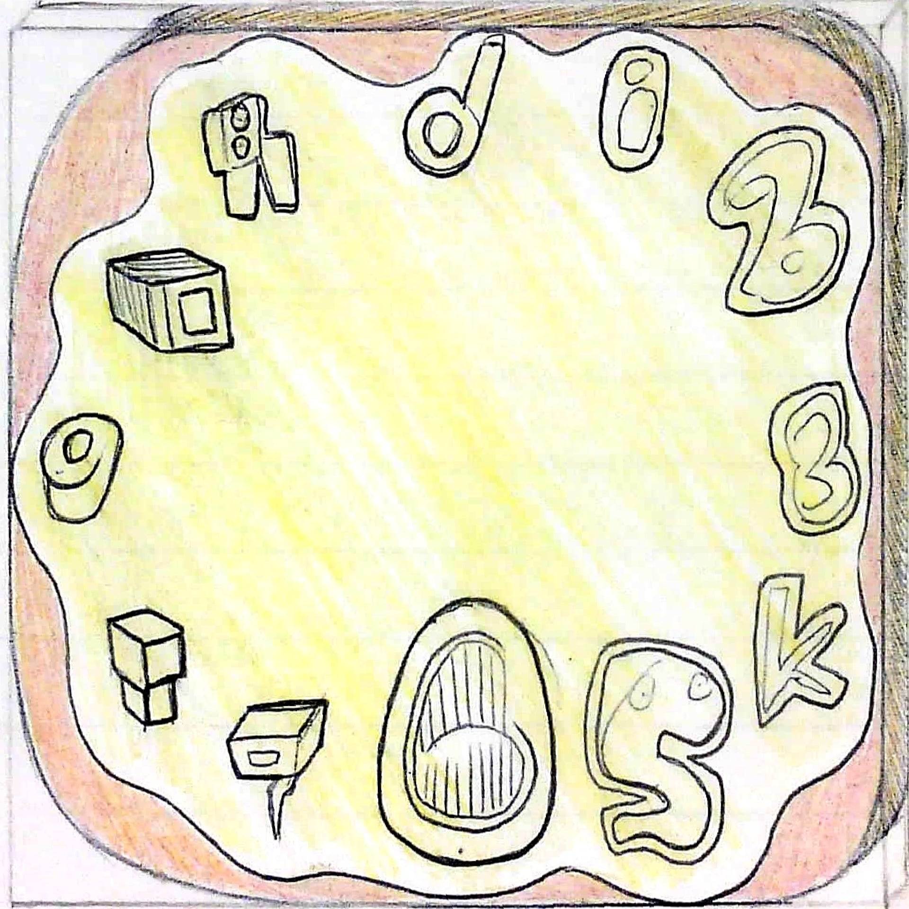

Skibidi Toilet is a viral internet series featuring a quirky battle between strange characters. On one side are the Toilet Heads—people with toilet-shaped heads popping out of toilets. On the other side are the Cameramen and Speakermen, who fight against the Toilet Heads in a playful, over-the-top showdown. The series is known for its absurd humor and bold visuals, making it a fun and memorable part of internet culture.

A playful clock design inspired by the Skibidi Toilet trend. The numbers are creatively replaced with elements like speaker pairs (11), a toilet roll (1), and other quirky details, blending humor with functionality.

Bold and vibrant, this design features a toilet with splashing water in a pop art comic style. The exaggerated colors and dynamic shapes make it visually striking and fun.

A creative take on the Skibidi Toilet theme, with speakers integrated into the design. The playful elements and bold colors make this clock a unique and eye-catching piece.

Another Skibidi-inspired design, featuring larger, bolder elements as clock numbers. The yellow splash adds a humorous touch, resembling pee, while maintaining a pop art aesthetic.